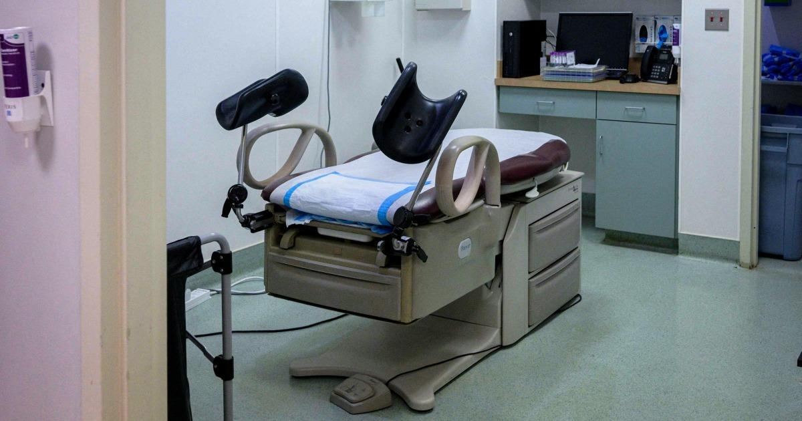

As Harris visits clinic, Republicans misdiagnose their abortion problemIf American voters are looking for a sharp contrast between the parties on reproductive rights, I have some good news for the electorate. Two weeks ago, for example, Donald Trump dangled the prospect of a national abortion ban, which he’s prepared to consider if voters return him to the White House. Today, in contrast, Vice President Kamala Harris will become the first official ever elected to national office to visit an abortion clinic. Let no one say the parties are basically the same, especially on this issue. Away from national spotlight, the political machinations are every bit as notable. Politico reported a couple of days ago, for example, that prominent opponents of reproductive rights are pushing Republicans to oppose protections for in vitro fertilization, and the same day, Axios reported that House GOP leaders invited leading anti-abortion activists to join the Republican conference for its annual retreat. A day later, The Wall Street Journal reported that party leaders are pushing their colleagues not to shy away from their opposition to abortion rights. A memo prepared by House Republicans’ campaign arm and viewed by The Wall Street Journal says Republicans have a “brand problem, not a policy problem,” as their reluctance to discuss the issue left it to Democrats to define where the GOP stood. Many voters view the party’s hopefuls as opposing abortion under any circumstances, when there are actually a variety of positions held by candidates, particularly in swing districts, the memo states. The article added that the National Republican Congressional Committee (NRCC) is encouraging candidates to “confidently articulate” their stances. The idea that the GOP has a “brand problem, not a policy problem” when it comes to abortion is not altogether new — there was some related chatter along these lines last year — but it’s an assertion that’s difficult to take seriously. |
 |